Постные блюда
Без мяса, молока и яиц — для поста и веганского меню. 38 рецептов: у каждого время, калории и БЖУ на порцию, пошаговые инструкции и список покупок
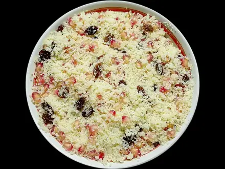
Кускус10 мин · 233 ккал · Б 6 г · Гарнир Салат из свежих овощей10 мин · 130 ккал · Б 2 г · Салат
Салат из свежих овощей10 мин · 130 ккал · Б 2 г · Салат Ачичук10 мин · 41 ккал · Б 2 г · Салат
Ачичук10 мин · 41 ккал · Б 2 г · Салат Овощи на пару20 мин · 127 ккал · Б 5 г · Гарнир
Овощи на пару20 мин · 127 ккал · Б 5 г · Гарнир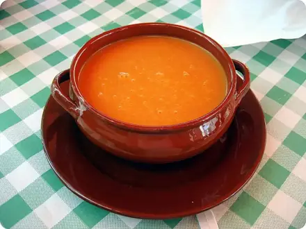
Гаспачо20 мин · 185 ккал · Б 4 г · Суп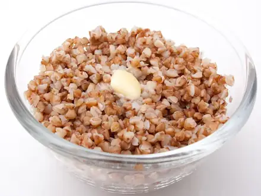
Гречка рассыпчатая25 мин · 156 ккал · Б 6 г · Гарнир- Рис рассыпчатый25 мин · 194 ккал · Б 3 г · Гарнир
 Кабачки жареные с чесноком25 мин · 264 ккал · Б 3 г · Закуска
Кабачки жареные с чесноком25 мин · 264 ккал · Б 3 г · Закуска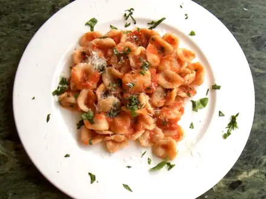
Паста с томатным соусом25 мин · 479 ккал · Б 13 г · Второе блюдо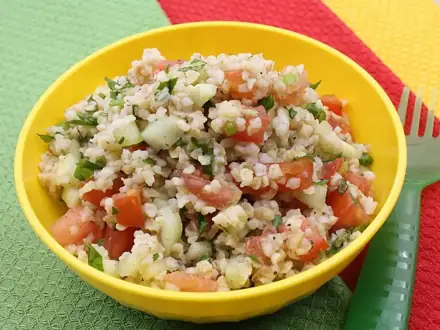
Булгур с овощами30 мин · 272 ккал · Б 8 г · Гарнир Тофу с овощами и соевым соусом30 мин · 330 ккал · Б 16 г · Второе блюдо
Тофу с овощами и соевым соусом30 мин · 330 ккал · Б 16 г · Второе блюдо Табуле30 мин · 204 ккал · Б 4 г · Салат
Табуле30 мин · 204 ккал · Б 4 г · Салат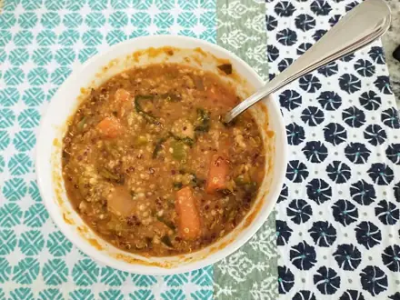
Суп из красной чечевицы35 мин · 280 ккал · Б 14 г · Суп Цветная капуста в духовке35 мин · 209 ккал · Б 7 г · Гарнир
Цветная капуста в духовке35 мин · 209 ккал · Б 7 г · Гарнир- Постное овсяное печенье35 мин · 347 ккал · Б 6 г · Десерт
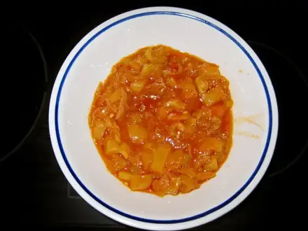
Лечо из перца и помидоров40 мин · 204 ккал · Б 5 г · Гарнир Щи из свежей капусты45 мин · 119 ккал · Б 4 г · Суп
Щи из свежей капусты45 мин · 119 ккал · Б 4 г · Суп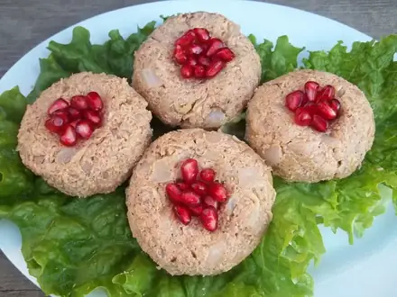
Пхали из шпината45 мин · 198 ккал · Б 8 г · Закуска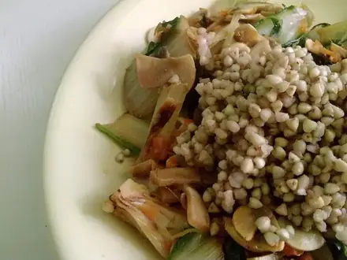
Гречка по-купечески постная с грибами45 мин · 386 ккал · Б 14 г · Второе блюдо Грибной суп50 мин · 163 ккал · Б 5 г · Суп
Грибной суп50 мин · 163 ккал · Б 5 г · Суп Картофель дольками в духовке50 мин · 290 ккал · Б 5 г · Гарнир
Картофель дольками в духовке50 мин · 290 ккал · Б 5 г · Гарнир Тушёная капуста50 мин · 191 ккал · Б 6 г · Гарнир
Тушёная капуста50 мин · 191 ккал · Б 6 г · Гарнир Овощное рагу50 мин · 228 ккал · Б 5 г · Второе блюдо
Овощное рагу50 мин · 228 ккал · Б 5 г · Второе блюдо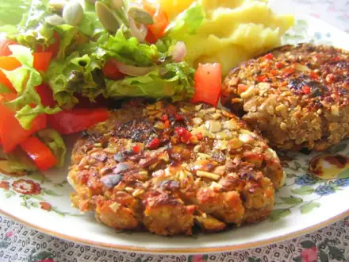
Котлеты из чечевицы50 мин · 428 ккал · Б 18 г · Второе блюдо Минестроне50 мин · 235 ккал · Б 8 г · Суп
Минестроне50 мин · 235 ккал · Б 8 г · Суп Грибная лапша постная50 мин · 168 ккал · Б 7 г · Суп
Грибная лапша постная50 мин · 168 ккал · Б 7 г · Суп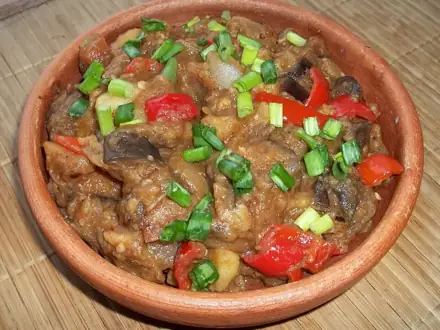
Аджапсандали60 мин · 288 ккал · Б 5 г · Гарнир Постные котлеты из капусты60 мин · 260 ккал · Б 7 г · Второе блюдо
Постные котлеты из капусты60 мин · 260 ккал · Б 7 г · Второе блюдо Картофельное рагу с грибами60 мин · 315 ккал · Б 10 г · Второе блюдо
Картофельное рагу с грибами60 мин · 315 ккал · Б 10 г · Второе блюдо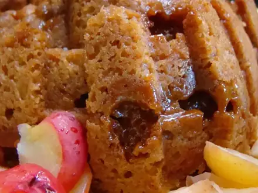
Постный пирог с яблоками70 мин · 346 ккал · Б 4 г · Выпечка Рататуй75 мин · 186 ккал · Б 4 г · Второе блюдо
Рататуй75 мин · 186 ккал · Б 4 г · Второе блюдо Винегрет75 мин · 178 ккал · Б 4 г · Салат
Винегрет75 мин · 178 ккал · Б 4 г · Салат Гороховый суп постный90 мин · 228 ккал · Б 10 г · Суп
Гороховый суп постный90 мин · 228 ккал · Б 10 г · Суп Вареники с картошкой100 мин · 515 ккал · Б 12 г · Второе блюдо
Вареники с картошкой100 мин · 515 ккал · Б 12 г · Второе блюдо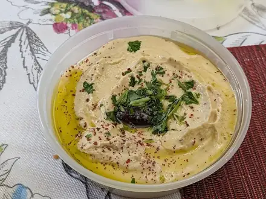
Хумус120 мин · 290 ккал · Б 10 г · Закуска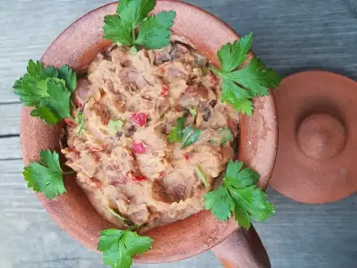
Лобио из фасоли150 мин · 426 ккал · Б 20 г · Второе блюдо Фасолевый суп постный150 мин · 160 ккал · Б 9 г · Суп
Фасолевый суп постный150 мин · 160 ккал · Б 9 г · Суп- Гречка с грибами и луком35 мин · 332 ккал · Б 13 г · Второе блюдо
Другие подборки
- Что приготовить из курицы
- Что приготовить из фарша
- Что приготовить из мяса
- Что приготовить из рыбы
- Что приготовить из картошки
- Что приготовить из яиц
- Что приготовить из творога
- Что приготовить из кабачков
- Что приготовить из капусты
- Что приготовить из грибов
- Что приготовить из риса
- Что приготовить из макарон
- Что приготовить из гречки
- Быстрый ужин за 30 минут
- Быстрый завтрак за 20 минут
- Что приготовить на скорую руку
- ПП-рецепты: лёгкие блюда до 400 ккал
- Белковые блюда: от 25 г белка на порцию
- Дешёвые рецепты из простых продуктов
- Что приготовить ребёнку
- Блюда на пару
- Что приготовить в духовке
- Простые супы
- Простые салаты
- Выпечка и десерты
- Блюда на праздничный стол
- Что приготовить из остатков